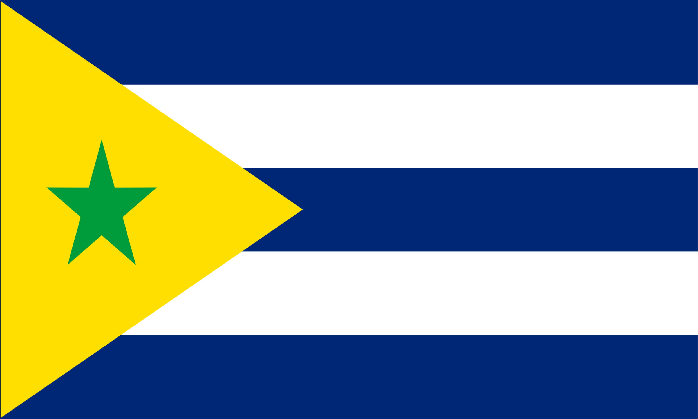
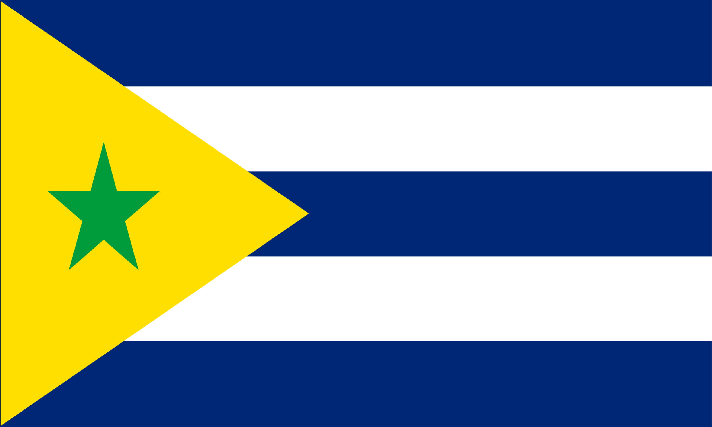

História de Bracuyana
Bracuyana foi fundada em 1994 por refugiados brasileiros e cubanos nas Bahamas. A sociedade foi organizada de forma autônoma, seguindo princípios socialistas-libertários e preservando a identidade cultural dos habitantes.
Apesar de não ser reconhecida oficialmente, a ilha mantém governo próprio, economia autônoma e práticas culturais únicas.
 

Documento Oficial em PDF
Confira abaixo o documento oficial sobre a história completa de Bracuyana.
Cultura de Bracuyana
Informações sobre cultura serão adicionadas aqui.
Língua de Bracuyana
Informações sobre a língua oficial serão adicionadas aqui.
Geografia de Bracuyana
Aqui está a localização de Bracuyana no mapa:
Notícias de Bracuyana
Em breve adicionaremos notícias atualizadas aqui.